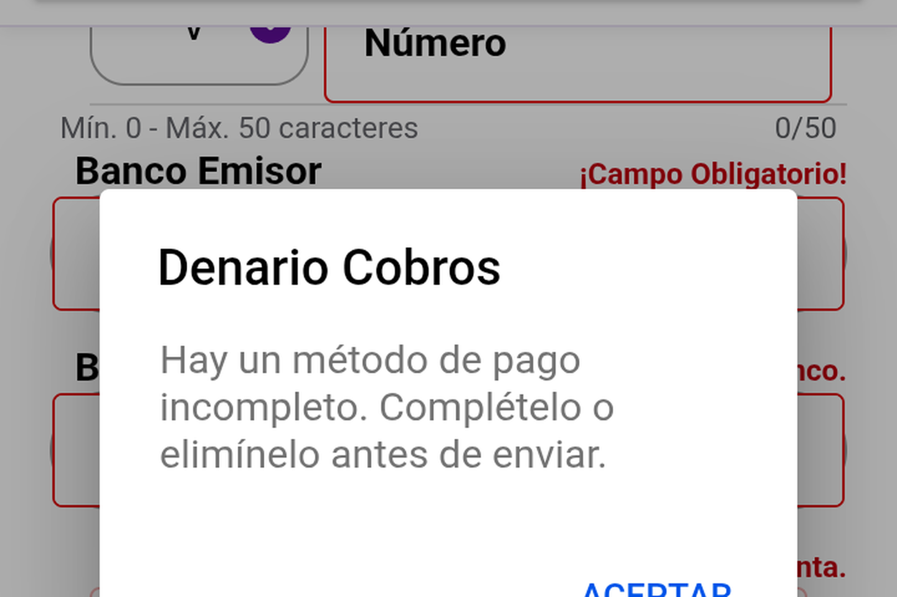
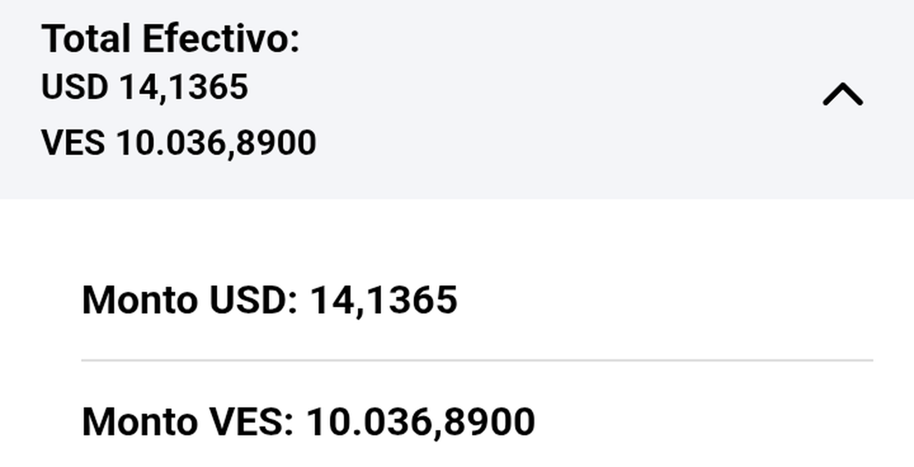
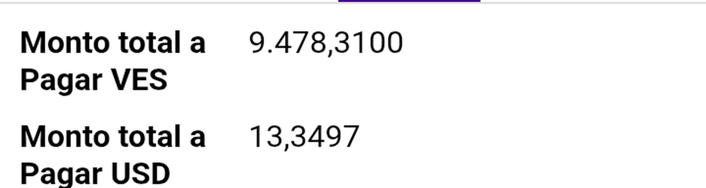
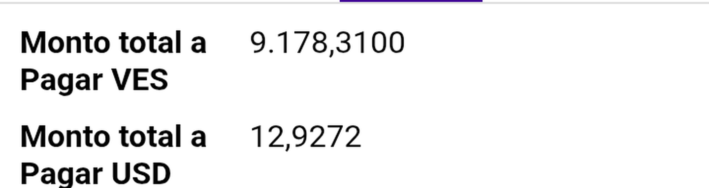
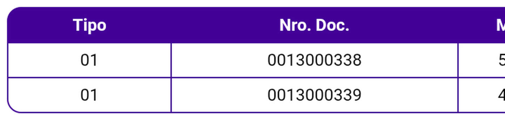
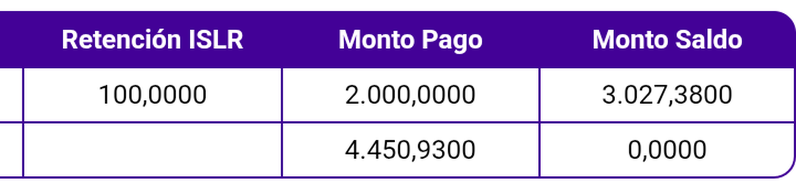
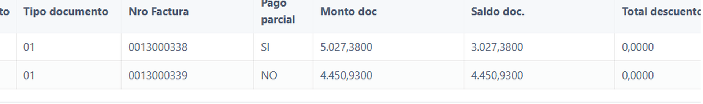

CONTROL DE CALIDADEstado funcional · rama Fixes-21
28 de agosto de 2026
28 de agosto de 2026
Módulo de Cobros · Denario Premium Móvil · versión 6.6.21 · Cliente CENTRAL EL PALMAR, S.A.
| Qué documenta | El comportamiento actual del módulo de Cobros: campos obligatorios por método de pago, anticipo automático, IGTF y la tabla de totales con retención |
| Cliente y playa | CENTRAL EL PALMAR, S.A. · empresa 1002 · denariocaribe.ddns.net:8080 (confirmada en runtime) |
| Build medido | APK instalado el 28/08 a las 15:07 · tasa 710,0000 VES/USD |
| Cliente de prueba | NESTLE VENEZUELA, S.A. — 1000001897 |
| Registros de evidencia | # Ref 27151 – 27160 · 10 registros enviados, todos confirmados en la nube · capa web consultada en denariocaribe |
La interfaz ofrece cinco métodos. Cada uno se midió con la técnica de dejar-uno-fuera: llenar todos los campos, comprobar que el envío procede, y luego vaciar de a uno para determinar cuál es realmente obligatorio. Llenar en cascada sólo demostraría que el último campo hacía falta.
| Método | Campos que presenta | Cuáles exige | ¿Envía con sólo el monto? |
|---|---|---|---|
| Pago Móvil | Nº de Teléfono · Tipo de documento · Banco Emisor · Banco Receptor · Número de referencia · Monto · Fecha | Los seis | No — bloquea |
| Depósito | Banco Receptor · Nro. Depósito · Monto · Fecha | Los tres | No — bloquea |
| Transferencia | Banco Receptor · Nro. Referencia · Monto · Fecha | Los tres | No — bloquea |
| Otros | Especifique: · Monto · Fecha | Los dos | No — bloquea |
| Efectivo | Nro. Recibo · Monto · Fecha | Sólo el Monto | Sí — «Nro. Recibo» es opcional por diseño |
| Cheque | No disponible — la interfaz no ofrece este método en este cliente | ||
Cuando falta un campo obligatorio, el envío se detiene con esta alerta, idéntica en los cuatro métodos que bloquean:

colletionPayment = true-false-true-true-true-true tiene una posición desactivada, pero
no corresponde a la que sugiere el orden alfabético del catálogo. El método ausente es Cheque, y
Depósito sí se ofrece. ⇒ conviene determinar los métodos disponibles en la interfaz, no deduciéndolos
de la variable.
prepaidCurrency = USD · prepaidRangeCurrency = USD ·
prepaidRangeAmount = 10 · automatedPrepaid = true. Esta variable
se modificó ese mismo día; todo lo que sigue se juzga contra USD.
| Comportamiento | Medición | Conforme |
|---|---|---|
| Moneda del anticipo | Cobro 27153 en VES, excedente 10.036,89 VES → anticipo 27154 en USD (14,1365). Cobro 27155 en USD → anticipo 27156 en USD. Aritmética: 10.036,89 ÷ 710 = 14,1365 | ✅ sigue prepaidCurrency |
| IGTF dentro del cobro sin separar | Sin IGTF: total a pagar 19,7400 USD. Con IGTF 3 %: 0,5922 → total 20,3322. Pago de 40,00 ⇒ diferencia 19,6678. En la nube, nu_amount_igtf = 0.5922 | ✅ aritmética exacta |
| IGTF por separado switch «Pago separado IGTF:» | Cobro 27157 con el switch ON: total a pagar 22,1965 → 21,5500 USD (baja 0,6465 = el IGTF) y en la nube nu_amount_igtf = 0.0000. Genera el documento IGTF-1787947895613.0 por 0,6465 USD, que aparece en Cobros → IGTF para el mismo cliente. Control con el switch OFF (27159): 24,8848 USD con nu_amount_igtf = 0.7248 y sin documento | ✅ de punta a punta |
| Importes del anticipo | Anticipo 27154: Total Efectivo VES 10.036,8900 y Monto VES 10.036,8900 | ✅ coinciden |
| IGTF en un cobro en VES | Con IGTF seleccionado sobre un cobro VES pagado en efectivo, montoIgtf = 0 y el total no varía. No aparece línea de IGTF | coherente con gravar divisas — no confirmado con producto |
Cómo se comporta el IGTF dentro del cobro: el impuesto se suma al total a pagar, de modo que reduce la diferencia en lugar de aumentarla, y el anticipo generado baja exactamente en el importe del IGTF (0,5922 USD).
Cómo se comporta el IGTF por separado: el switch «Pago separado IGTF:» (Tab Documentos, bajo el selector de IGTF) desglosa el impuesto del total a pagar y, al enviar, genera un documento independiente que queda pendiente y se cobra desde Cobros → IGTF. El recorrido se verificó completo, incluido el cobro de ese documento: acuse «IGTF nro. 27158 enviado exitosamente», y tras cobrarlo el documento desaparece de la lista, de modo que no queda expuesto a un doble cobro.
875.972.390,8200 a 875.972.849,8350 VES: +459,0150, exactamente el IGTF
del documento generado. Es un contraste contra la deuda real del cliente, no contra la fórmula del
producto.

prepaidCurrency.Monto Saldo muestra 3.027,38, que es el documento menos el importe del pago parcial
sin restar además los 300,00 retenidos. Consultado con desarrollo: no se considera un defecto
— el monto del pago parcial ya incluye la retención ingresada, de modo que descontarla otra vez
sería duplicarla. Se documenta el comportamiento y las cifras para que quede trazado.
Al aplicar una retención, el «Monto total a Pagar» baja exactamente en el monto retenido. Medido
sobre el mismo cobro y los mismos documentos, sin tocar nada más, con una retención de 300,00 VES
(IVA 200,00 + ISLR 100,00) sobre el documento 0013000338:


El importe que la aplicación le pide cobrar al vendedor ya viene neto de la retención: el pago
que el vendedor introduce no contiene los 300,00 retenidos. Es el mismo criterio que aplica el
detalle del documento, donde «Monto a pagar VES» pasó de 5.027,3800 a
4.727,3800 al guardar la retención.
Sobre ese mismo documento, activado «Pago parcial» con Monto a pagar VES = 2.000,00. En el
mismo cobro viaja un segundo documento sin retención, que sirve de contraste:
| Documento | Monto Doc. | Retención | Monto Pago | Monto Saldo (pantalla) | Lectura |
|---|---|---|---|---|---|
0013000338con retención + parcial | 5.027,3800 | 300,0000 | 2.000,0000 | 3.027,3800 | = 5.027,38 − 2.000,00. La retención no se resta aparte porque, según desarrollo, ya está contenida en el pago |
0013000339sin retención, pago completo | 4.450,9300 | — | 4.450,9300 | 0,0000 | documento saldado |


La tabla mide 909 px en un
viewport de 360: se aportan dos recortes solapados por la fila. A la izquierda los números de documento;
a la derecha, en el mismo orden, Retención ISLR, Monto Pago y
Monto Saldo. La primera fila es el documento con retención; la segunda, el control.
| Documento | nu_amount_doc | nu_balance_doc | nu_amount_retention | nu_amount_retention2 | in_payment_partial |
|---|---|---|---|---|---|
0013000338 | 5027.3800 | 3027.3800 | 200.0000 | 100.0000 | true |
0013000339 | 4450.9300 | 4450.9300 | 0.0000 | 0.0000 | false |
Columna afectada: collection_detail.nu_balance_doc. La nube recibe el mismo valor que
muestra la pantalla, de modo que cualquier consumidor posterior hereda ese saldo.
Antes de interpretar el valor conviene fijar qué representa esa columna, porque su nombre se parece al de «Monto Saldo» del móvil y no son la misma magnitud. Se consultaron en la web tres cobros sin pago parcial, dos de ellos ajenos a esta corrida:
| Cobro | Documento | Monto doc | Saldo doc. | Monto a pagar | Qué demuestra |
|---|---|---|---|---|---|
| 27129 ajeno a la corrida | 0091033060 | 36.600,0000 | 939,0100 | 939,0100 | 🔑 factura de 36.600 de la que ya sólo se debían 939,01 |
| 27160 control de QA | 010000253810022023 | 2.764.314,0000 | 2.764.314,0000 | 2.764.314,0000 | se debía todo, y se pagó todo |
| 27152 | 0013000339 | 4.450,9300 | 4.450,9300 | 4.450,9300 | ídem, dentro del cobro en estudio |
La fila del cobro 27129 lo resuelve: con Monto doc = 36.600,00 y
Saldo doc. = 939,01, esa columna no puede ser ni el importe original del documento ni
el remanente tras el pago. Es lo que el cliente adeudaba de ese documento en el momento del cobro.
| Columna | Pregunta que responde |
|---|---|
Web · Saldo doc. | Cuánto debía el cliente de ese documento |
Móvil · Monto Saldo | Cuánto queda tras aplicar el pago |

0013000338, con
retención y pago parcial) muestra 3.027,3800 sobre un documento de 5.027,3800; la segunda,
sin pago parcial, refleja el importe íntegro. Ambos valores coinciden con los del móvil y con la
nube.Saldo doc. deja de ser la deuda previa del documento y pasa a ser el remanente tras el
pago (5.027,38 − 2.000,00). Los tres cobros sin pago parcial de la tabla anterior guardan la deuda; el
que tiene parcial guarda el remanente. No afecta a la operación, pero quien lea esa columna en un
reporte o una integración debe saber que responde a dos preguntas distintas según la bandera de pago
parcial.
No es un caso aislado de esta corrida. Contando todas las filas de collection_detail del
cliente:
| Escenario | Qué guarda nu_balance_doc | Filas | % |
|---|---|---|---|
| Sin pago parcial | la deuda del documento | 9.087 | 98,9 % |
| Con pago parcial | bruto − pago (el remanente) | 13.124 | 97,7 % |
Los dos comportamientos son sistemáticos y el segundo se remonta al cobro nº 2 ⇒ no es una regresión de esta versión: el doble criterio convive en el campo desde el origen. Se documenta como característica del dato, no como hallazgo.
| Escenario | Comportamiento medido | Resultado |
|---|---|---|
| Retención + pago completo | Documento 0013000338, retención 300,00, pago 4.727,3800 → Monto Saldo queda en 0,0000 | ✅ conforme |
| Retención + pago parcial | El caso descrito arriba: Monto Saldo = 3.027,38 | consultado con desarrollo |
Cobro tipo Retención (co_type = 2) | No ejercitado en este build | sin medir |
| # | Comportamiento | Por qué se documenta |
|---|---|---|
| 1 | Al enviar un cobro que genera anticipo no se muestra aviso previo con el importe. Sí aparece el rótulo «Este pago creó el anticipo automático» dentro del Tab Pagos, y el acuse final del envío | El usuario confirma el envío sin ver de antemano el monto del anticipo que se creará. Observado en 2 de 2 envíos, con la reserva de que en ambos casos el primer clic de Enviar no disparó el handler |
| 2 | Fecha por defecto desigual entre métodos: Efectivo nace en la fecha del día, mientras Depósito, Transferencia, Otros y Pago Móvil nacen en 6/8/2026 | Un cobro registrado con fecha de varias semanas atrás afecta a la conciliación. No se investigó si es intencional |
| 3 | El Número de referencia de Pago Móvil admite sólo dígitos: al teclear REF-PM-001 conservó únicamente 001. Los demás métodos aceptan texto | Una referencia bancaria con letras se recorta sin avisar |
| 4 | Un cobro con retención exige adjunto para poder enviarse, aunque requiredCollectionAttachments = false | La firma del Tab Adjuntos satisface el requisito, lo que permite completar el envío sin recurrir a la cámara |
| 5 | Una diferencia negativa impide el envío incluso dentro del rango de tolerancia: «…el monto pagado debe ser igual al monto a pagar.» | Esta validación corre después de la de métodos incompletos |
| 6 | En el listado de BUSCAR, los cobros recién creados no encabezan la lista | Se localizan por número de referencia sin dificultad. No se profundizó |
| # | Pendiente | Por qué importa |
|---|---|---|
| 1 | El saldo con retención en otros escenarios de la web | Se midió el cobro 27152. No se comprobó cómo muestra la web un cobro con retención y pago completo, ni uno con varios documentos mezclados |
| 2 | IGTF por separado en moneda VES, y combinado con pago parcial, retención o descuento | El flujo se validó completo en USD y con Efectivo. Su comportamiento al mezclarlo con las demás variables no está medido, y son justo las combinaciones donde aparecen las divergencias |
| 3 | Cobro tipo Retención (co_type = 2) | No se ejercitó en este build, de modo que su comportamiento actual no está documentado |
| 4 | Cobro con IVA (co_type = 4) | Se abrió el formulario pero no se cargaron documentos: se agotó el tiempo disponible |
| 5 | Los selectores de Pago Móvil (código de área, tipo de documento) | Vienen con valor por defecto y no se probó vaciarlos. El control no ofrece opción nula |
| 6 | Empresa 1003 (Destilería Yaracuy) | Todo se midió sobre la empresa 1002 |
| 7 | Si «Nro. Recibo» resulta obligatorio en otros clientes | Se midió únicamente en este cliente. Alguna configuración por cliente podría cambiarlo |
reports/el_palmar/cobros_metodos_regresion_20260828/.cobros-metodos-regresion.md.
Las capturas son recortes ampliados de las tomas originales del dispositivo, conservadas sin editar
en img/. Registros de evidencia: # Ref 27151 – 27160 (27160 creado por QA como control).